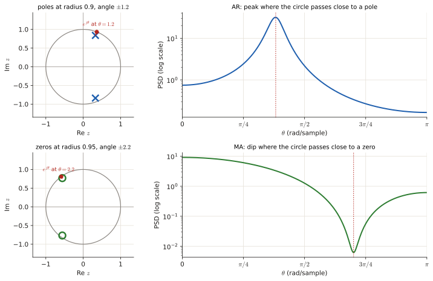

Toolbox: the maths the solutions use#
Every exam solution in this guide is built from the few tools on this page. If a step in a solution looks like magic, it is one of these. Read it once and come back when needed.
1. Notation you will meet#
| Symbol | Read as | Meaning |
|---|---|---|
| \(x[n]\) | "x of n" | a discrete-time signal: one number per integer time \(n\) |
| \(E[X]\) | "expected value of X" | the average of \(X\) over infinitely many repetitions |
| \(p(x;\theta)\), \(p(x\mid\theta)\) | "pdf of x given theta" | how likely the data \(x\) is if the parameter equals \(\theta\) |
| \(\hat\theta\) | "theta hat" | an estimate of \(\theta\) computed from data |
| \(\theta\) in spectra | "frequency" | normalised angular frequency, from \(-\pi\) to \(\pi\) (rad/sample) |
| \(r[l]\), \(r_x[l]\) | autocorrelation at lag \(l\) | \(E\{x[n]\,x[n-l]\}\): how similar the signal is to itself shifted by \(l\) |
| \(P(e^{j\theta})\) | power spectral density (PSD) | how the power of the signal is spread over frequency |
| \(\mathcal H_0,\mathcal H_1\) | hypotheses | "nothing there" vs "signal / event present" |
| \(\sigma_i^2\) | innovation variance | variance of the white noise \(i[n]\) that drives a signal model |
2. Logs and exponentials#
Why \(\ln(ab)=\ln a+\ln b\): it is just \(e^ae^b=e^{a+b}\) read backwards: logs turn multiplication into addition. The other rules in the line follow from it.
Why we take logs all the time. The log is increasing, so whatever maximises \(f(\theta)\) also maximises \(\ln f(\theta)\). And the log turns a product of \(N\) terms (likelihood of independent samples) into a sum, which is much easier to differentiate:
The same trick is used in detection: "\(L(x)>\lambda\)" is the same statement as "\(\ln L(x)>\ln\lambda\)".
3. Derivatives you need#
| \(f(\theta)\) | \(f'(\theta)\) |
|---|---|
| \(\theta^k\) | \(k\theta^{k-1}\) |
| \(\ln\theta\) | \(1/\theta\) |
| \(1/\theta\) | \(-1/\theta^2\) |
| \(1/\theta^2\) | \(-2/\theta^3\) |
| \(e^{c\theta}\) | \(c\,e^{c\theta}\) |
| \(\ln(1-\theta)\) | \(-1/(1-\theta)\) |
| \(\cos\theta\), \(\sin\theta\) | \(-\sin\theta\), \(\cos\theta\) |
| sigmoid \(\lambda(\theta)=\frac{1}{1+e^{-\theta}}\) | \(\lambda(1-\lambda)\) |
| \(g(h(\theta))\) (chain rule) | \(g'(h(\theta))\,h'(\theta)\) |
Where they come from: the power rule is \(\frac d{d\theta}\theta^k=k\theta^{k-1}\) (so \(1/\theta=\theta^{-1}\) gives \(-\theta^{-2}\)). The sigmoid one: \(\lambda'=\frac{e^{-\theta}}{(1+e^{-\theta})^2}=\lambda\cdot\frac{e^{-\theta}}{1+e^{-\theta}}=\lambda(1-\lambda)\). The chain rule is "derivative of the outside, evaluated at the inside, times the derivative of the inside".
Maximum or minimum? At a point where \(f'=0\), if \(f''<0\) it is a maximum. For MLE/MAP you want a maximum.
4. The integrals that keep coming back#
(Why: substitute \(u=ax\) and the integral becomes \(\frac{1}{a^{n+1}}\int_0^\infty u^ne^{-u}du=\frac{n!}{a^{n+1}}\), because \(\int_0^\infty u^ne^{-u}du=n!\) by integrating by parts \(n\) times.) So \(\int_0^\infty xe^{-ax}dx=1/a^2\) and \(\int_0^\infty x^2e^{-ax}dx=2/a^3\). These give every MMSE in this course.
Gaussian tails. For \(X\sim\mathcal N(\mu,\sigma^2)\): \(\;P(X>t)=Q\!\left(\frac{t-\mu}{\sigma}\right)\), where \(Q(z)=\int_z^\infty\frac{1}{\sqrt{2\pi}}e^{-u^2/2}du\) is the area of the standard normal to the right of \(z\). Useful values: \(Q(0)=0.5\), \(Q(1)=0.159\), \(Q(2)=0.023\), \(Q(3)=0.0013\), and \(Q(-z)=1-Q(z)\). Older exams use \(\operatorname{erf}\) instead: \(P(X\le t)=\tfrac12\left[1+\operatorname{erf}\!\left(\frac{t-\mu}{\sigma\sqrt2}\right)\right]\), so \(Q(z)=\tfrac12\left[1-\operatorname{erf}(z/\sqrt2)\right]\).
5. Complex exponentials (needed for every PSD)#
Euler: \(e^{j\theta}=\cos\theta+j\sin\theta\). Adding \(e^{j\theta}\) and \(e^{-j\theta}\) cancels the sines:
(Picture and animation of why: Chapter 0 §0.3.)
The squared magnitude of a complex number is the number times its conjugate: \(|w|^2=w\,w^*\). The single most used identity in Part 3:
and for two coefficients:
If they ask for the answer "as a function of \(\cos\theta\)" only, use \(\cos2\theta=2\cos^2\theta-1\) (from \(\cos2\theta=\cos^2\theta-\sin^2\theta\) and \(\sin^2\theta=1-\cos^2\theta\)).
Why the two-coefficient formula: multiply \((1+ae^{-j\theta}+be^{-j2\theta})\) by its conjugate. The diagonal terms give \(1+a^2+b^2\); the pair \(1\cdot ae^{j\theta}\) and \(ae^{-j\theta}\cdot1\) gives \(2a\cos\theta\); the pair \(ae^{-j\theta}\cdot be^{j2\theta}\) and its conjugate gives \(2ab\cos\theta\); the pair \(1\cdot be^{j2\theta}\) and its conjugate gives \(2b\cos2\theta\).
6. Filters, the \(z\)-variable and the unit circle#
A difference equation says how the output is built from inputs and past outputs, e.g. \(x[n]=i[n]+b_1 i[n-1]-a_1x[n-1]\). Replace each delay by a factor \(z^{-1}\) to get the transfer function:
- Zeros: values of \(z\) that make the numerator 0 (here \(z=-b_1\)). Poles: values that make the denominator 0 (here \(z=-a_1\)).
- Evaluating on the unit circle \(z=e^{j\theta}\) gives the frequency response; that is why PSDs contain \(e^{-j\theta}\).
- Stable and causal: all poles inside the unit circle (\(|{\rm pole}|<1\)).
- Minimum phase: poles and zeros inside the unit circle. The innovation filter of a spectral factorisation must be minimum phase. For one coefficient this just means \(|a|<1\), \(|b|<1\).
- AR = only poles (peaks in the spectrum), MA = only zeros (dips), ARMA = both.

7. Solving things fast#
Quadratic: \(ax^2+bx+c=0\Rightarrow x=\dfrac{-b\pm\sqrt{b^2-4ac}}{2a}\). The two roots of the equations in Part 3 are always \(a\) and \(1/a\) (their product is \(c/a=1\) there): keep the one with \(|{\rm root}|<1\).
2×2 linear system (Cramer's rule) (it comes from eliminating one unknown: multiply the first equation by \(s\), the second by \(q\), and subtract):
Geometric series: \(\sum_{k=0}^\infty a^k=\frac{1}{1-a}\) for \(|a|<1\). (Why: call the sum \(S=1+a+a^2+\dots\); then \(aS=a+a^2+\dots=S-1\), so \(S(1-a)=1\).)
8. Distributions that appear in the exams#
| Name | PMF / PDF | Mean | Shows up in |
|---|---|---|---|
| Bernoulli(\(p\)) | \(P(1)=p,\ P(0)=1-p\) | \(p\) | |
| Binomial(\(n,p\)) | \(\binom nk p^k(1-p)^{n-k}\) | \(np\) | Oct 21 1d |
| Geometric(\(p\)) | \(p(1-p)^{x-1},\ x\ge1\) | \(1/p\) | |
| Negative binomial / Pascal(\(k,\theta\)) | \(\binom{x-1}{k-1}\theta^k(1-\theta)^{x-k},\ x\ge k\) | \(k/\theta\) | Jun 26 2c |
| Poisson(\(\lambda\)) | \(\lambda^xe^{-\lambda}/x!\) | \(\lambda\) | Jun 26 2d |
| Uniform(\(a,b\)) | \(1/(b-a)\) | \((a+b)/2\) | variance \((b-a)^2/12\) |
| Exponential(\(\lambda\)) | \(\lambda e^{-\lambda x},\ x\ge0\) | \(1/\lambda\) | everywhere in Part 4 |
| Gaussian \(\mathcal N(\mu,\sigma^2)\) | \(\frac{1}{\sqrt{2\pi\sigma^2}}e^{-(x-\mu)^2/(2\sigma^2)}\) | \(\mu\) | everywhere |
| Rayleigh(\(\sigma\)) | \(\frac{x}{\sigma^2}e^{-x^2/(2\sigma^2)},\ x\ge0\) | \(\sigma\sqrt{\pi/2}\), \(E[X^2]=2\sigma^2\) | Nov 19 3, Jun 26 4b |
| Gamma(\(k,\theta\)) scale | \(\frac{x^{k-1}e^{-x/\theta}}{\theta^k\Gamma(k)}\) | \(k\theta\) | Jun 26 2b |
| Gamma(\(\alpha,\beta\)) rate | \(\propto\lambda^{\alpha-1}e^{-\beta\lambda}\) | \(\alpha/\beta\), mode \((\alpha-1)/\beta\) | Jun 26 2d |
| Beta(\(\alpha,\beta\)) | \(\propto\theta^{\alpha-1}(1-\theta)^{\beta-1}\) | \(\frac{\alpha}{\alpha+\beta}\), mode \(\frac{\alpha-1}{\alpha+\beta-2}\) | Jun 26 2c, Apr 25 2d |
| Laplacian | \(\frac{1}{2b}e^{-\lvert x\rvert/b}\) | 0 | Nov 22 4, Jan 22 4 |